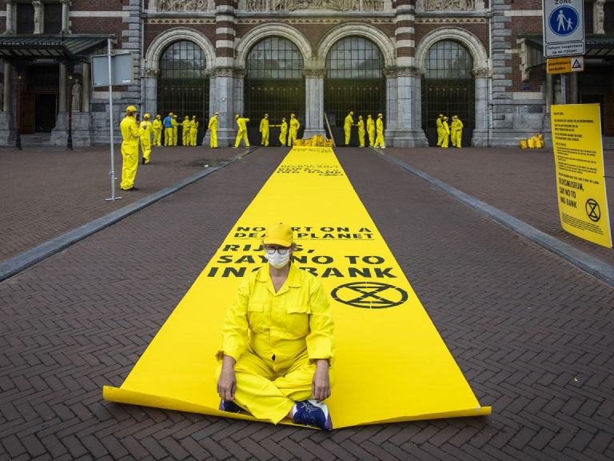
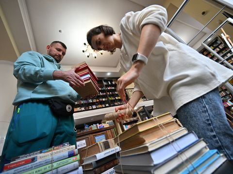
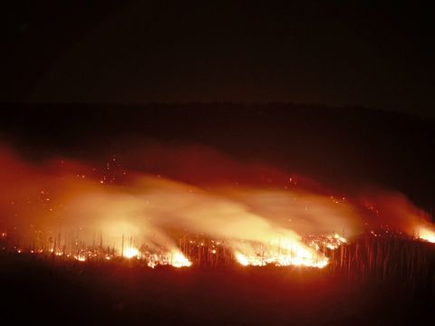
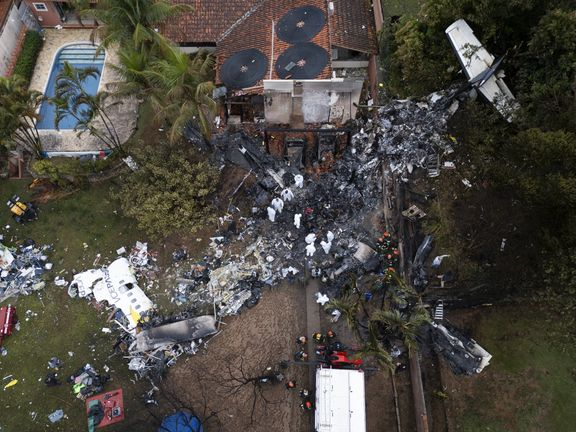
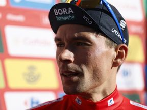
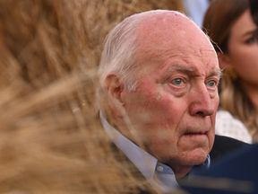
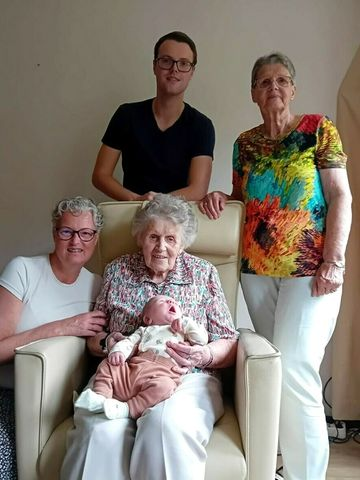
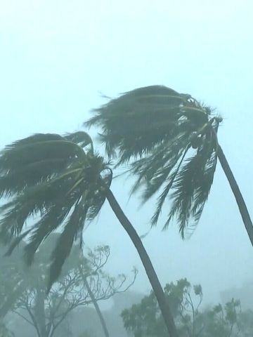
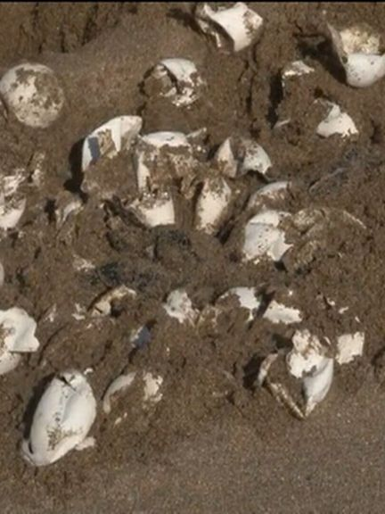

Rijksmuseum gesloten vanwege blokkade Extinction Rebellion
Wilders ontmoet Zalensky: 'Corruptie besproken'
-
Rijksmuseum gesloten vanwege blokkade Extinction Rebellion
-
Wilders ontmoet Zalensky: 'Corruptie besproken'
-
Gijzelaars belangrijker dan controle over corridor, zegt oud-veiligheidschef Israël
Er zijn veel zorgen over ongelukken met de fatbike, maar een overzicht van hoeveel het er echt zijn, ontbreekt tot nu toe.
Midden-Oostenblog
-
Een kunstenaar als Medunjanin heeft Oranje-opponent Bosnië niet meer
Blaak werd in 2023 uitgeroepen tot beste keeper ter wereld en pakte deze zomer olympisch goud met Oranje in Parijs.
-
Met de Russische invasie in Oekraïne brak ook een cultuuroorlog uit
De staking, bij alle havens aan de oostkust, kan behoorlijke impact hebben op de wereldwijde scheepvaarthandel.
 -
Honderden evacuaties vanwege bosbrand op berg in Duitsland
In de eerste week worden zo'n 50 mensen opgevangen. Er kunnen maximaal 150 mensen verblijven in de opvang.
 -
IJsvorming mogelijk oorzaak vliegtuigongeluk Brazilië
Blaak werd in 2023 uitgeroepen tot beste keeper ter wereld en pakte deze zomer olympisch goud met Oranje in Parijs.
 -
Loodzware voorlaatste Vuelta-rit met zeven bergen • Roglic gestart in rode trui
De 20-jarige Niklas Behrens werd afgelopen vrijdag wereldkampioen bij de beloften in Zürich.
 -
Plat doet op vierde Spelen ook mee aan marathon: 'Was op zoek naar nieuwe prikkel'
Dit jaar kwam de hulporganisatie bij tachtig rampen in actie, in heel vorig jaar waren dat er zestig.

-
Regisseur Pim de la Parra (Blue Movie, Wan Pipel) overleden
In de eerste week worden zo'n 50 mensen opgevangen. Er kunnen maximaal 150 mensen verblijven in de opvang.
-
Oud-vicepresident Cheney stemt niet op partijgenoot Trump: 'Grote bedreiging'
De staking, bij alle havens aan de oostkust, kan behoorlijke impact hebben op de wereldwijde scheepvaarthandel.

Laatste nieuws
Kijken
-
Vijf generaties
0:25
 -
Zware orkaan
0:32
 -
Vuurhoos
0:14
-
Oplegger tegen bord
0:19
-
Schildpad uit ei
0:21
 -
Gemorst
0:27
Live bij de NOS
-
Algemene Beschouwingen: Tweede kamer debatteert over de kabinetsplannen
live
vandaag
Meer info
-
La Vuelta: etappe 20
15:25
vandaag
Meer info
-
Advertentie via STER.NL
-
Legt het nieuws aan je uit
NOS op 3 -
Nieuws om te delen
NOS Stories -
Nieuws voor kinderen
NOS Jeugdjournaal -
Achtergronden bij het nieuws
Nieuwsuur